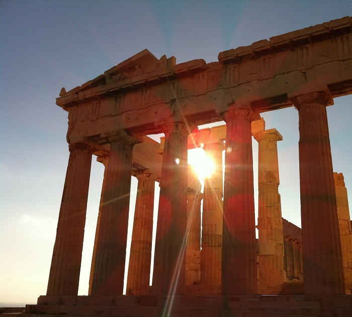
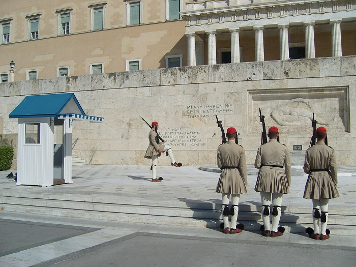
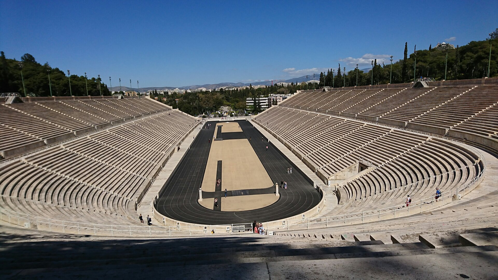

Visit Athens
Acropolis Museum
Museum is an archaeological museum focused on the findings of the archaeological site of the Acropolis of Athens. The museum was built to house every artifact found on the rock and on the surrounding slopes, from the Greek Bronze Age to Roman and Byzantine Greece. It also lies on the archaeological site of Makrygianni and the ruins of a part of Roman and early Byzantine Athens.
Square / Greek Parliament
Every major city has a center where you can feel its heartbeat. Syntagma square is just that: an open space, quite noisy and busy, where everyone can make his stand and mingle with all sorts of people
Panathenaic Stadium
The Panathenaic Stadium dates back to the 4th century B.C. and was the site of the first modern Olympic games in 1896 and remains the starting point of the Olympic flame torch relay. Made entirely of white marble, it's an impressive sight that's earned it the nickname Kallimarmaro or "beautiful marble"
 Instagram.png)
Welcome to our tour! We’re excited to show you around and share with you all the amazing things that this city has to offer. Our tour is designed to be informative, engaging, and fun. We’ll take you to all the best spots in the city and give you an insider’s look at what makes this place so special. Whether you’re a first-time visitor or a seasoned traveler, we guarantee that you’ll have a great time on our tour. So come join us and let us show you what this city is all about!